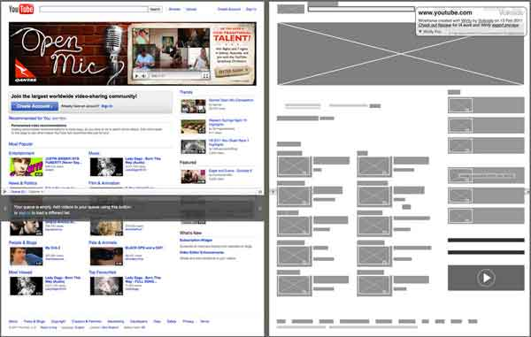

Wireframing Youtube.com
Written by Supakorn Laohasongkram on July 17th, 2014

What Problem Is the Youtube.com Solving?
What Visual Challenges Are There in the Main Page of Youtube.com?
With massive amount of videos being shared on Youtube, the visual challenge of Youtube's main page is to serve each user what he or she wants to see by filtering from all the videos available into a single page.
Most of wireframes you are seeing from the pictures above, therefore, are videos. Surprisingly, the biggest video on the top of the main page is an advertisement video. While the content that you really want to see are all the other videos down the page which specifically served up to you according to what you have subcribed or what Youtube thinks you might want to see.
Judging merely from the wireframe, or the first foundation of Youtube web design, I am hoping Youtube's priority is not as big as its advertisement's video when compare to the need of its users which are a little further down the list.